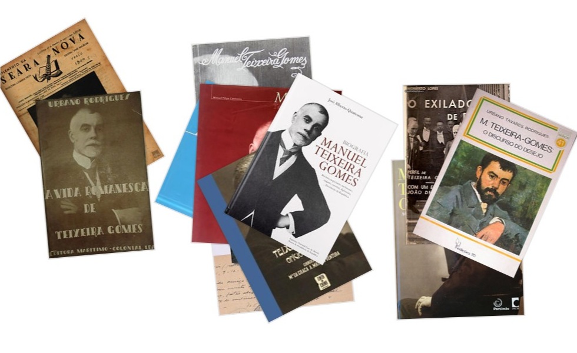

Bibliografia Específica
- AFONSO, Jorge, "Foi sempre aspiração minha visitar as terras da moirama: uma perspectiva portuguesa da realidade magrebina", in VENTURA, Maria da Graça Mateus (coord.), Manuel Teixeira Gomes Ofício de Viver, Tinta da China, 2010.
- —, "Manuel Teixeira Gomes em Bejaia: o Magrebe e a Europa no dealbar do século XX" in Meridional Revista de Estudos do Mediterrâneo, n.º 1, ICIA/Sul, Sol e Sal, 2021, pp. 162-187.
- AFONSO, Rui, Catálogo da Exposição Manuel Teixeira Gomes — O Coleccionador de Pintura, Portimão, Câmara Municipal de Portimão/Museu de Portimão, 2009.
- AMARAL, Fernando, "O Amor e a Beleza", in Ler, Lisboa, Círculo de Leitores, 1991.
- ANSELMO, Manuel, "Elogio de Manuel Teixeira Gomes", in Antologia Moderna (Ensaios Críticos), Lisboa, Livraria Sá da Costa, 1937.
- AZEVEDO, Manuela (Seleção, prefácio e notas), Cartas de M. Teixeira Gomes a João de Barros, CMP/CMFF, 2.ª ed. 2018.
- BARRETO, Mimoso, «O Algarve na Obra de Manuel Teixeira Gomes», Jornal do Algarve, de 18.01.1958 a 12.04.1958.
- BUESCU, Helena Carvalhão, "A Experiência do Mundo", in Ler, Lisboa, Círculo de Leitores, 1991.
- CANAVEIRA, Manuel Filipe, Manuel Teixeira Gomes: Fotobiografia, Lisboa, Museu da Presidência da República, 2006.
- —, Manuel Teixeira Gomes: Uma Vida entre Dois Séculos, Lisboa, Edicarte, 1999.
- CHAVES, Castelo Branco, "M Teixeira-Gomes", Cadernos Seara Nova, Lisboa, Seara Nova, 1934.
- DUARTE, Maria João Raminhos, "Manuel Teixeira Gomes e a oposição ao Estado Novo", in TENGARRINHA, José (coord.), Portimão e a Revolução Republicana, Lisboa, Texto Editores/Câmara Municipal de Portimão, 2010.
- FERREIRA, Vitor Wladimiro, "Manuel Teixeira Gomes, um esteta peregrino da beleza e da arte", in Manuel Teixeira Gomes Agenda 2010, INCM/CMP, 2010.
- FRANÇA, José-Augusto, O Algarve na Obra de Teixeira Gomes — Oito Pinturas de Eduardo Viana a Propósito de Teixeira-Gomes, Lisboa, Edições Asa/CMP, 2001.
- FRANCO, Mário Lyster, Manuel Teixeira Gomes: o Homem que Regressou, Faro, 1950.
- HORTA, Bruno, "A ambiguidade sexual do Presidente da República", in Diário de Notícias de 14 de Agosto de 2010. [Disp. no blogue]
- INÁCIO, Nuno Campos, "Apontamento Genealógico de Manuel Teixeira Gomes" in Cadernos do Barão de Arêde, n.º 1 julho-setembro, 2014, p.123 e ss.
- JORGE, Lídia, "Manuel Teixeira Gomes — O fulgor dos corpos", in Sul Desportivo (jornal ficcionado para 159.º aniversário de MTG), Portimão, ICIA, 2019.
- JÚDICE, Nuno, "O fascínio do Corpo na obra de Teixeira Gomes", in Viatlântica, nº 21, Universidade de São Paulo, 2012.
- LOPES, Norberto, O Exilado de Bougie, Lisboa, Parceria A. M. Pereira, 1942.
- MAGALHÃES, Joaquim, Esboço do Perfil Literário de Teixeira Gomes, Faro, Tipografia União, 1960.
- MOURÃO-FERREIRA, David, Aspectos da Obra de M. Teixeira-Gomes, Lisboa, Portugália Editora, 1961.
- NUNES, Joaquim António, Da Vida e da Obra de Teixeira Gomes, Lisboa, 1976.
- OSÓRIO, Carlos, "Manuel Teixeira Gomes, Estudante em Coimbra (1870-1877)" in Meridional Revista de Estudos do Mediterrâneo, n.º 1, ICIA/Sul, Sol e Sal, 2021, pp. 94-119.
- PACHECO, José, Manuel Teixeira Gomes: numa sublime cruzada em busca do belo, 1.ª ed., Albufeira, Arandis, 2015.
- QUARESMA, José Alberto, Biografia de Manuel Teixeira Gomes, INCM, Lisboa, 2016.
- RODRIGUES, Urbano Tavares, M. Teixeira Gomes — O Discurso do Desejo, Lisboa, Bertrand Editora, 1985.
- VENTURA, Maria da Graça Mateus (coord.), Manuel Teixeira Gomes Ofício de Viver, Lisboa, Tinta da China, 2010.
Links Úteis
- A ambiguidade sexual do Presidente da República
- Leme.pt — Biografia de Manuel Teixeira Gomes
- A Republicano — Manuel Teixeira Gomes
- Obra de Bico — Manuel Teixeira Gomes (1)
- Obra de Bico — Manuel Teixeira Gomes (2)
- Teixeira Gomes Maratona
- A História na Cidade — Manuel Teixeira Gomes nasceu há 155 anos em Portimão
- Agosto Azul — Projecto